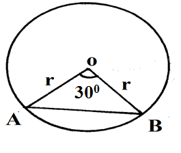

Chapter 10: Length, Area, Volume, and Capacity
Length, Area, Volume, and Capacity
Length, is the distance between two points. Its SI Unit is the meter (m). The perimeter of a rectangle and a square is given by the formula: \[ Perimeter\, of \,a \,rectangle\,=\,2(length+width)\]
\[Perimeter \,of \,a \,square\,=\,4 \times length\]
The circumference of a circle is given by the formula:
\[\begin{align} \text{Volume} & = \pi r^2 h \\ \text{Old volume} & = \pi r^2 h \\ \text{New radius} & = 1.225r \\ \text{New height} & = 0.7h \\ \text{New volume} & = \pi(1.225r)^2(0.7h) \\ & = 1.225^2 \times 0.7 \times r^2 \times h \\ & \approx 1.05044 \pi r^2 h \end{align}\]The length of an arc (l) of a circle subtended by an angle, \(\theta\) , at the center of the circle is given by the formula:
\[ l=\frac{\theta}{360}\times 2\pi r\]
, is the amount of surface enclosed within the boundaries of a plane shape. Its SI unit is a square meter (\(m^2\)).
\[A=length (l)\times width(w)=lw\]
\[A=length \times length= l^2\]
\[A=\frac{1}{2} \times base \times height\]
\[A=base \times height\]
\[A=base \times height \]
OR
\[A=\frac{1st\, diagonal \times 2nd \,diagonal}{2}\]
\[ A = \frac{1}{2} \times \text{height} \times \left(\text{sum of the two parallel sides}\right) = \frac{1}{2} \times h \times (a + b) \]
\[A=\pi r^2\]
\[A=\frac{\theta}{360} \times\pi r^2\]
\[\begin{align*} S.A&=2(length \times width)+2(width \times height)+2(length\times height)\\ &=2(lw)+2(wh)+2(lh)\\ &=2(lw+wh+lh) \end{align*}\] \[\begin{align*} S.A&=2\pi rh+2\pi r^2\\&=2\pi r(h+r) \end{align*}\]\[S.A=4\pi r^2\]
, is the amount of space occupied by a matter. Its SI unit is a cubic meter (\(m^3\)).
\[\begin{align*} v&=length \times width \times height\\&=lwh \end{align*}\] \[\begin{align*} v&=length \times length \times length \\ &=l^3 \end{align*}\]\[ v=\pi r^2 h\]
\[ v=\frac{4}{3} \pi r^3\]
\[\begin{align*} v&=cross-sectional \,area \times length \\ &=\frac{1}{2}\times base\times height\times length\\ &=\frac{1}{2}\times bhl \end{align*}\], is the ability of the container to hold fluids. Its SI unit is the litre (l).
Solved Examples
An angle of 0.9 radians at the Centre of the circle subtends an arc of length 28.8cm. Find in 4 significant figures(\(\pi radians=180^0\)):
a) The radius of the circle \((3mks)\)
b) The area of the sector enclosed by the arc and radii. \((2mks)\)
The angle of the arc \(=0.9 \pi radians\)
Given that: \(\pi\,rad=180^{0}\)
The length of the arc (l) is given by:
a)
\[\begin{equation} \begin{split} \frac{\theta}{360}\times 2\pi r&=length\, of \,the \,arc \\ 28.8 cm &=\frac{162^{0}}{\cancel\pi}\times\frac{1}{\cancelto{180}{360}}\times \cancel2\cancel\pi r\\ \frac{162^{0}}{180^{0}}r &= 28.8 cm \\ r&= 28.8 cm \times \frac{180^{0}}{162^{0}}\\ \therefore r&=32 \end{split} \end{equation}\]b)
\[\begin{equation} \begin{split} Area&=\frac{\theta}{360} \times\pi r^2 \\ &=\frac{162^{0}}{360^{0}\cancel\pi}\times\cancel\pi \times 32 \times 32\\ &=\frac{162^{0}}{360^{0}}\times 32 \times 32\\ &=460.8 cm^2 \end{split} \end{equation}\]A solid metal cylinder with a radius of 7cm and height of 5cm is melted down and recast into a spherical ball. Calculate to 1 decimal place the surface area of this ball. \((4mks)\)
Radius (R) of the cylinder: \(R= 7cm\)
Height (h) of the cylinder: \(h= 5 cm\)
Radius (r) of the sphere: \(r=?\)
Surface Area (S.A) of the Sphere: \(S.A = 4\pi r^{2}\)
\[\begin{equation} \begin{split} Volume\, of\, Cylinder &= volume\, of \,Sphere\\ \cancel\pi R^{2}h &= \frac{4}{3}\cancel\pi r^{3}\\ 7^2\times5 &=\frac{4}{3}r^{3} \\ r^{3} &=7\times7\times5\times\frac{3}{4}\\ r &=\sqrt[3]{183.75}\\ \therefore r& \approx 5.685 cm\\ \end{split} \end{equation}\] \[\begin{equation} \begin{split} S.A\,of\,the \,sphere& = 4\pi r^{2}\\ &=4\times\frac{22}{7}\times 5.685^{2}\\ &=406.299\\ &\approx 406.3 cm^{2} \end{split} \end{equation}\]An arc of length ‘x’ cm subtends an angle of, \((\frac{p}{\pi})^0\),at the center of the circle. Find an expression for the radius, r, of the circle in terms of x and p. \((3mks)\)
Find the length of the minute hand of a wall clock if the tip of the minute hand traces a length of 6p cm between 11:25 am and 11:45 am (Give your answer in terms of \(\pi\)). \((3mks)\)
The diagonal of a rectangular flower garden is 20m. If the width of this garden is 12m, calculate its length and perimeter to 3 significant figures. \((3mks)\)
The figure below shows a circle Centre O. Chord AB subtends \(30^0\) at the Centre. If the area of the minor segment is \(5\frac{16}{21} cm^2\), find the radius of the circle.(hint area of \(\triangle \,OAB=\frac{1}{2}r^2sin(\theta)\) \((3mks)\)

The curved surface area of a cylindrical container is \(2,112\,cm^2\). If the radius of the container is 21cm, calculate to one decimal place the capacity of the container in litres \((3mks)\)
The base of a triangle is 3cm longer than its height. Given that the area of the triangle is \(35cm^2\), determine the base of the triangle. \((3mks)\)
A carpenter constructed a closed wooden box with internal measurements 1.8 m long, 0.8 m wide, and 0.6 m high. The wood used in constructing the box was 1.0cm thick and had a density of \(0.75g/cm^{3}\). Determine the:
a) Volume in \(cm^3\) of the wood used in constructing the box. \((3mks)\)
b) Mass of the box in kilograms correct to 4 significant figures. \((1mk)\)
A solid hemisphere of radius 7cm has the same volume as a cube. Find the length of the cube to 3 significant figures. \((3mks)\)
Mango juice in a factory is stored in a rectangular tank whose internal dimensions are 1.8m by 1.4m by 2.5m one day the tank was 80% full of Mango juice. Calculate the volume of Mango juice in the tank in litres. \((3mks)\)
An open box has an external breadth of 12 cm, a height 10 cm, and a length of 15 cm. If the thickness of the material of the box is 1 cm, find the total surface area of the box. \((5mks)\)
A triangular plot PQR is such that the length of the side PQ is two-thirds that of QR. The ratio of the lengths \(PQ: PR = 4:9\) and the angle at Q is obtuse. If the perimeter of the plot is 38m calculate the length of the 3 sides of \(\triangle PQR\) \((4mks)\)
A metallic cuboid 10cm by 12cm by 15cm is melted. Half of it is used to make a cylinder of radius 4.2cm, the remaining is used to make a sphere. Determine in 4 significant figures using \(\pi= \frac{22}{7}\)
a) The height and surface area of the cylinder to 2 decimal places. \((4mks)\)
b) The radius and surface area of the sphere are correct to 3 significant figures. \((4mks)\)
c) The difference between the surface area of the sphere and the cylinder. \((2mks)\)